앱 사용법
홈 화면에서 앱을 톡 누르면 열리고, 어느 앱에서든 왼쪽 위 ◀를 누르면 홈으로 돌아와요. 홈 화면은 두 쪽이에요. 위쪽 1/2 ▶를 누르거나 옆으로 밀면 다음 쪽이 나와요.
터치 요령
| 동작 | 하는 법 | 쓰는 곳 |
|---|---|---|
| 톡 | 펜으로 짧게 눌렀다 떼기 | 버튼, 지뢰찾기 칸 열기 |
| 꾹 | 0.5초쯤 누르고 있기 | 지뢰찾기 깃발, 번호 뽑기 5씩 바꾸기 |
| 밀기 | 누른 채 옆으로 움직이기 | 홈 화면 쪽 넘기기, 그림 그리기 |
이 보드는 눌러야 반응하는 저항막 터치예요. 스마트폰처럼 살짝 스치면 잘 안 돼요. 터치펜으로 또박또박 눌러요.
앱 하나씩 보기

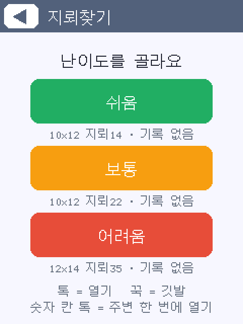
💣 지뢰찾기
숫자를 보고 지뢰가 없는 칸을 모두 열면 이겨요.
- 난이도: 쉬움 10×12칸 지뢰 14개 · 보통 지뢰 22개 · 어려움 12×14칸 지뢰 35개
- 톡 = 칸 열기, 꾹 = 깃발 꽂기/빼기
- 오른쪽 위 깃발 버튼을 켜면 톡 = 깃발로 바뀌어요.
- 열린 숫자 칸을 톡 하면, 주변 깃발 수가 숫자와 같을 때 나머지 칸이 한 번에 열려요.
- 첫 칸은 항상 안전해요. 가운데 얼굴을 누르면 새 게임.
- 난이도마다 가장 빨리 깬 시간이 저장돼요.
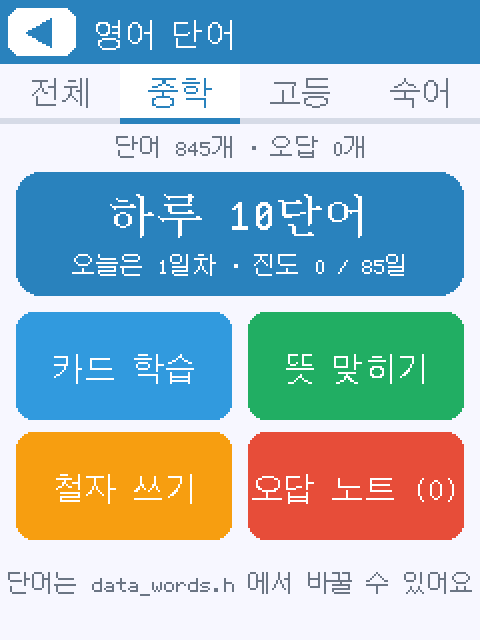

🔤 영어 단어
중학 필수 845개 · 고등 필수 588개 · 숙어 231개, 모두 1,664개가 들어 있어요.
- 위쪽 탭에서 전체 / 중학 / 고등 / 숙어 중 단어장을 골라요.
- 하루 10단어: 1. 익히기로 카드 10장을 외운 뒤 2. 테스트에서 10문제 중 8개 이상 맞히면 다음 일차가 열려요.
- 복습 테스트: 통과한 일차의 단어 중 틀렸던 것부터 다시 물어봐요.
- 카드 학습: 카드를 톡 하면 뜻이 보여요. '몰라요'를 누르면 오답 노트로 가요.
- 뜻 맞히기: 4개 중 뜻 고르기 10문제.
- 철자 쓰기: 뜻을 보고 화면 키보드로 영어를 써요. '힌트'는 다음 글자 하나를 알려 줘요.
- 오답 노트: 틀린 단어만 모아 카드나 퀴즈로 다시 공부해요. 맞히면 빠져요.
- 진도와 오답 노트는 답할 때마다 저장돼서 전원이 꺼져도 남아요.
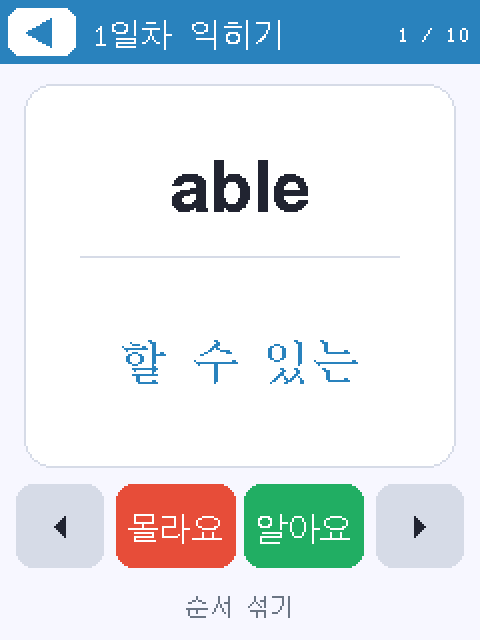
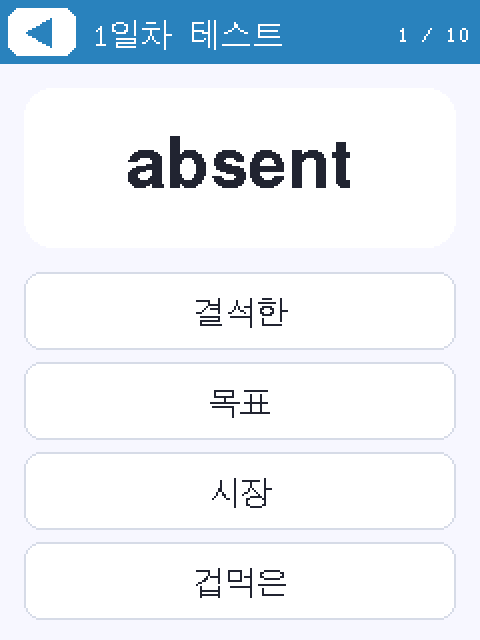
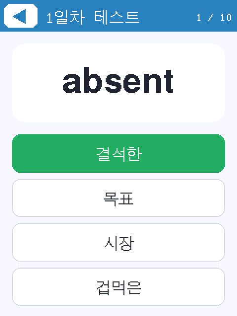
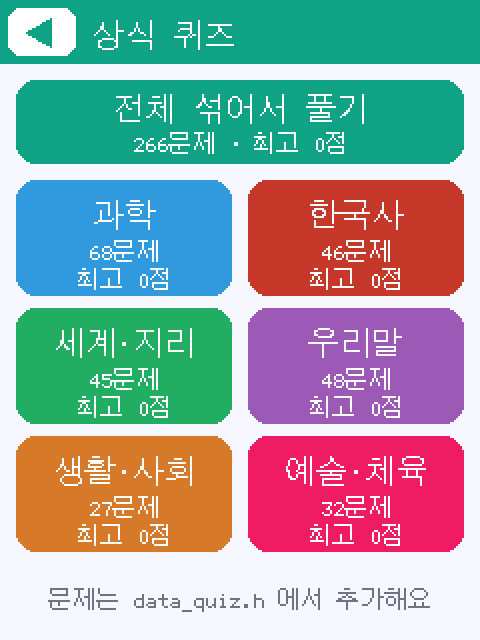
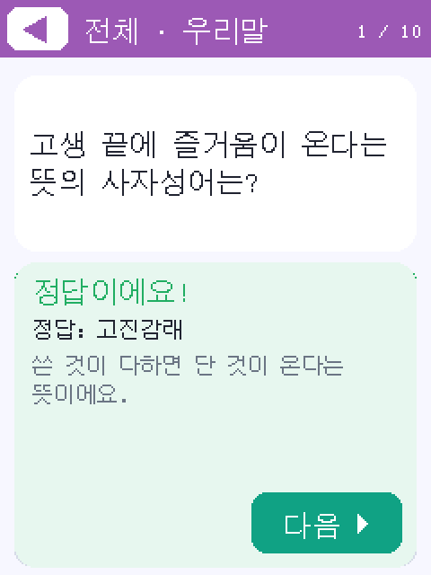
❓ 상식 퀴즈
6개 분야 266문제. 한 번에 10문제를 무작위로 내요.
- 분야: 과학 68 · 한국사 46 · 세계·지리 45 · 우리말 48 · 생활·사회 27 · 예술·체육 32
- 전체 섞어서 풀기를 고르면 위쪽 막대에 지금 문제의 분야가 나와요.
- 답을 고르면 정답과 해설이 나와요. 다 읽고 다음 ▶.
- 분야마다 최고 점수가 저장돼요.


🎨 그림판 · 📝 손글씨 메모
펜으로 그리고 쓰는 앱. 둘 다 자동으로 저장돼요.
- 아래 도구 막대: 색 고르기, ● 굵기(누를 때마다 3단계), 지우개, ↶ 되돌리기(한 번)
- 위쪽 < >로 다른 장으로 넘겨요. 그림판 3장, 메모 5쪽.
- 새로를 누르면 지금 장만 지워요. 실수로 지웠으면 되돌리기!
- 3초 동안 안 그리면 자동 저장돼요. 전원을 꺼도 남아 있어요.
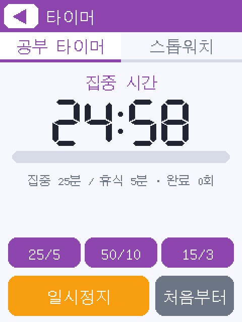
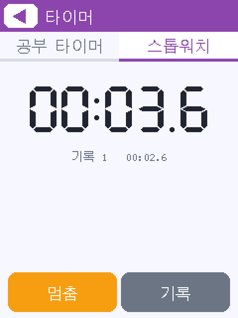
⏱️ 공부 타이머
집중 시간과 쉬는 시간을 번갈아 재는 뽀모도로 타이머예요.
- 25/5, 50/10, 15/3 버튼으로 집중/휴식 시간을 골라요. 멈춰 있을 때 − +로 1분씩 바꿀 수도 있어요.
- 집중이 끝나면 알람과 초록 LED, 쉬는 시간이 끝나면 빨간 LED가 깜빡여요. 끝낸 횟수만큼 🍅가 쌓여요.
- 스톱워치 탭: 시작/멈춤, '기록'으로 구간 시간을 5개까지 남겨요.
- 타이머가 돌아가는 동안에는 자동 절전이 되지 않아요. 앱을 나가면 타이머가 멈춰요.

🧮 계산기
사칙연산, %, 부호 바꾸기(+/−).
- 과학 시간 계산에 써 봐요: 밀도 = 질량 ÷ 부피, 속력 = 거리 ÷ 시간
- 위쪽 작은 글씨에 방금 한 계산식이 보여요. 0으로 나누면 '오류'가 나와요.
- C = 모두 지우기, ← = 한 글자 지우기
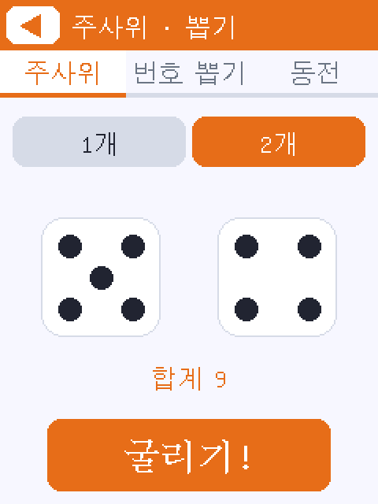

🎲 주사위 · 번호 뽑기 · 동전
모둠 활동과 발표 순서 정하기에 좋아요.
- 주사위: 1개 또는 2개(합계도 보여 줘요)
- 번호 뽑기: 1부터 N번까지(2~100). − +를 꾹 누르면 5씩 바뀌어요.
- 중복 없이 뽑기를 켜면 한 번 나온 번호는 다시 안 나와요. 최근 뽑은 번호 8개가 아래에 보여요.
- 동전: 앞/뒤
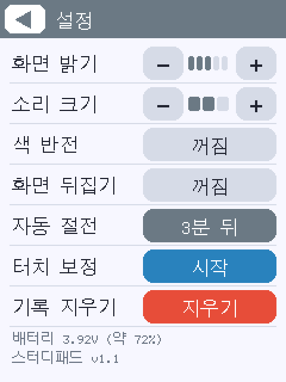
⚙️ 설정
바꾼 설정은 바로 저장돼요.
- 화면 밝기 5단계, 소리 크기 0~3(0 = 소리 끔)
- 색 반전: 색이 필름처럼 반대로 보일 때 켜요.
- 화면 뒤집기: 보드를 거꾸로 세워 쓸 때 켜요. 터치도 같이 뒤집혀요.
- 자동 절전: 끄기 / 1분 / 3분 / 5분 / 10분
- 터치 보정: 누른 곳과 다른 곳이 눌릴 때
- 기록 지우기: 점수, 오답 노트, 단어 진도를 모두 지워요. 그림과 메모는 남아요. 보드를 다른 친구에게 넘겨줄 때 써요.
- 맨 아래에 배터리 전압이 보여요.

⚡ 반응 속도 (홈 2쪽)
화면이 초록색으로 바뀌는 순간 최대한 빨리 눌러요.
- 빨간 화면에서 미리 누르면 "너무 빨라요!"
- 가장 빠른 기록(ms, 1000분의 1초)이 저장돼요.
- 이 앱은 새 앱 만들기 예제예요. 코드가 짧고 설명이 많아서 읽어 보기 좋아요. → 코드 고쳐 보기
🔋 절전과 배터리
- 아무것도 안 누르면 정해진 시간(처음 값 3분)이 지나기 15초 전에 화면이 어두워지고, 시간이 되면 절전해요.
- 화면이나 BOOT 버튼을 누르면 하던 화면 그대로 깨어나요. 깨우려고 누른 건 버튼으로 치지 않아요.
- 배터리가 거의 없으면 기록을 저장하고 빨간 LED가 깜빡여요. 설정 화면에 '충전 필요!'가 떠요.
- 더 낮아지면 "배터리가 부족해요" 화면을 띄우고 스스로 꺼져요. 충전한 뒤 BOOT 버튼을 누르면 다시 켜져요.
- 오래 쓰지 않을 때는 배터리 커넥터를 빼 두면 배터리가 오래가요.